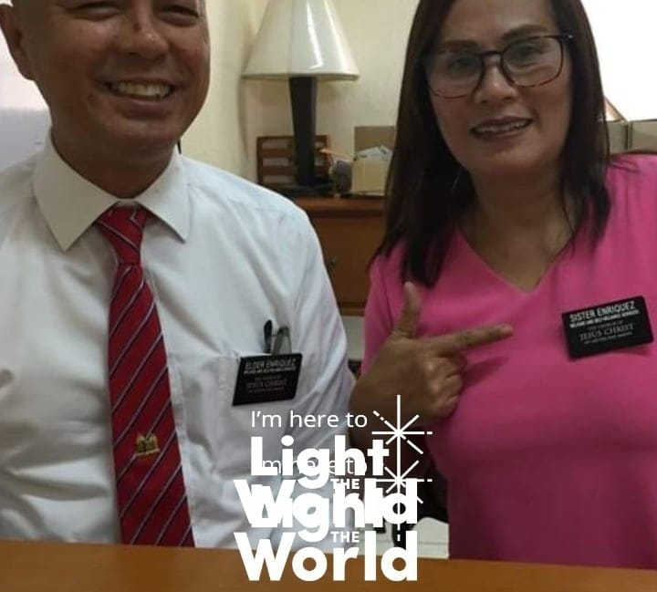

Target Audience
The target audience of climatesite.page website are people who's age is 18 years and above or anyone who is looking to find out about the weather (e.g., community leaders, farmers, fisherman, sportsmen, outdoorsman, and other occupations, etc). It can be used mainly for people who are booking holidays or people who wants to go for fun day out.
Persona 1
| Name: | Annie Reniva |
| Occupation: | Wedding Planner & Creative Director at Wishes&Wonders.org / Chruch Service Missionary - Education at BYU-Pathway Worldwide |
| Education: | Studies Master of Special Education at Cebu Normal University, Studied Certificate of Professional Education (CPE) at Cebu Normal University, Studied Master of Management - Integrated Health Services Management (MM-IHSM) at UPCC, Studied Bachelor of Science in Physical Therapy at Silliman University |
| Goals and motivation for using the site: | The service is very easy to use. I can quickly check the weather and what is it going to be like. |
| Technology: | The service is very easy to use. I can quickly check the weather and what is it going to be likeShe loves latest technology and uses it for for her job as Wedding Planner. |
Persona 2
| Name: | Merlyn Enriquez |
| Occupation: | Senior Marketing Director at International Marketing Group - IMG / Self-Employed (Business) |
| Education: | Studied at University of Cebu |
| Goals and motivation for using the site: | The advantage of using the site is that it allows you to know the weather in different countries, I use it whenever I travel outside the country. |
| Technology: | Uses the latest Android phone for her business. |
Scenarios
How will the weather affects my outdoor activity today?
How to help my child overcome his fear of severe weather?
Will I wear boots tomorrow?
What was the weather like on a particular date?
What does it mean you have 7 chances of rain?